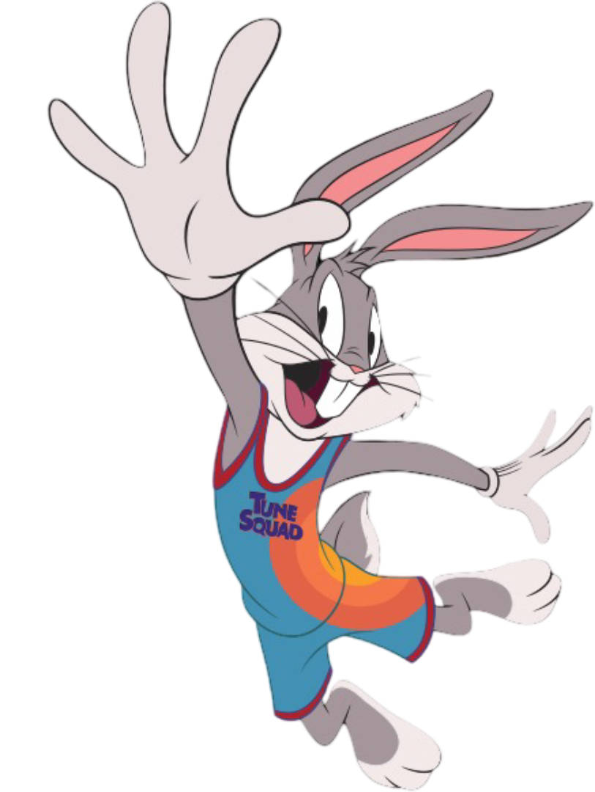

27 - Box Shadow
Property attaches one or more shadows to an element.
box-shadow: 0 0 12px #7829f0
Sombra básica con desenfoque de 12px de color morado.
box-shadow: 0 0 12px #7829f0;
offset-x: 0 | offset-y: 0 | blur: 12px | color: morado
box-shadow: -10px -10px 24px 0 #57ff79
Sombra desplazada hacia arriba e izquierda de color verde.
box-shadow: -10px -10px 24px 0 #57ff79;
offset-x: -10px | offset-y: -10px | blur: 24px | color: verde
box-shadow: 0 0 20px #fffa64
Sombra con mayor desenfoque de color amarillo.
box-shadow: 0 0 20px #fffa64;
offset: 0 | blur: 20px | color: amarillo | efecto neón
box-shadow: multiple
Varias sombras separadas por coma: amarillo, azul y rojo.
box-shadow: 4px 4px 0 #cc0,
8px 8px 0 #00c,
12px 12px 0 #c00;
8px 8px 0 #00c,
12px 12px 0 #c00;
Efecto 3D con sombras sólidas de colores amarillo, azul y rojo
box-shadow: va deep-shadow
Sombra múltiple con difuminado: amarillo, azul y rojo.
box-shadow: 0 0 10px #fffa64,
0 0 20px #00c,
0 0 30px #c00;
0 0 20px #00c,
0 0 30px #c00;
Efecto neón profundo con colores amarillo, azul y rojo
box-shadow vs drop-shadow
La diferencia: box-shadow sombrea el contenedor (caja) - drop-shadow sombrea la forma real de la imagen
box-shadow
Sombra de Caja

.contenedor {
box-shadow: 0 15px 35px rgba(255, 250, 100, 0.5);
background: #0d0d0d;
padding: 20px;
border-radius: 16px;
}
box-shadow: 0 15px 35px rgba(255, 250, 100, 0.5);
background: #0d0d0d;
padding: 20px;
border-radius: 16px;
}
La sombra se aplica al CONTENEDOR
Se ve un RECTÁNGULO SOMBREADO alrededor
Se ve un RECTÁNGULO SOMBREADO alrededor
drop-shadow()
Sombra alrededor de la imagen
.imagen {
filter: drop-shadow(0 15px 30px rgba(255, 250, 100, 0.6));
border-radius: 12px;
}
filter: drop-shadow(0 15px 30px rgba(255, 250, 100, 0.6));
border-radius: 12px;
}
La sombra sigue la FORMA REAL de la imagen
No hay contenedor visible
No hay contenedor visible
Diferencia clave:
box-shadow: La sombra se aplica al rectángulo del contenedor (se ve una caja sombreada alrededor).
drop-shadow(): La sombra sigue la forma real de la imagen (respeta bordes redondeados y transparencias).